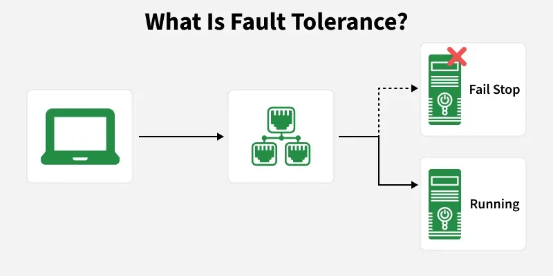
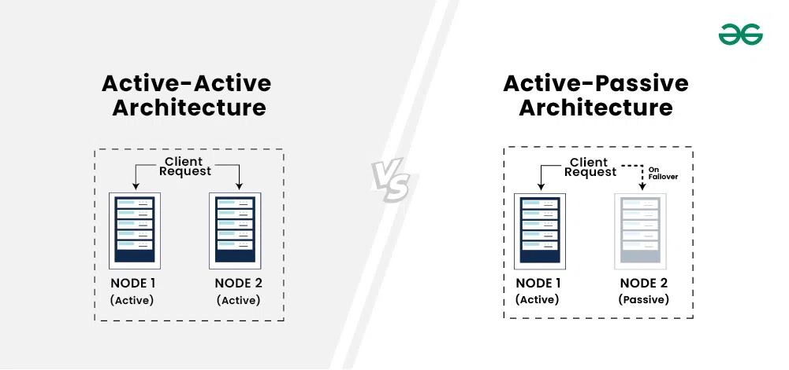

System Design Mastery
Master scalable systems with premium insights
🛡️ FAULT TOLERANCE - Automatic Recovery from System Failures
1️⃣ What is Fault Tolerance?
Fault Tolerance is the ability of a system to continue working even when some components fail.
In simple words:
👉 If something breaks, system still runs.
Fault tolerance helps achieve high availability.

2️⃣ Why does it exist? (What problem does it solve?)
In real systems, failures are normal:
- Servers crash
- Networks fail
- Databases go down
Fault tolerance ensures:
- No complete system failure
- Minimal downtime
3️⃣ What breaks without it?
Without fault tolerance:
- Single server failure → full outage
- Database crash → entire app down
- Payment system stops completely
- Data loss possible
📌 Example:
If your only server crashes → website unavailable.
5️⃣ When to use / When NOT to use
✅ Use Fault Tolerance
- Financial services
- Healthcare systems
- E-commerce
- Cloud services
👉 Any system where downtime costs money.
❌ When NOT necessary
- Personal projects
- Learning apps
- Small prototypes
Because it increases cost and complexity.
6️⃣ One common mistake
🚨 Confusing High Availability with Fault Tolerance
High Availability = System may briefly pause when failure happens, but recovers quickly by shifting to another component.
Fault Tolerance = System continues working during failure.
Fault tolerance is stronger. Fault tolerance helps achieve high availability.
7️⃣ How Systems Achieve Fault Tolerance
1️⃣ Replication
Keep copies of
data.
If one database fails → Then replica takes over.
2️⃣ Redundancy
Multiple servers
instead of one.
No single point of failure.
3️⃣ Failover Mechanism
Automatic switching to backup server.
4️⃣ Distributed Architecture
Don’t rely on a single machine.
5️⃣ Health Checks & Monitoring
Detect failures quickly.
8️⃣ Real app connection
🛒 E-commerce
- Multiple app servers
- Primary + replica DB
- Multi-region deployment
If one region fails: traffic routed to another.
9️⃣ Why not build everything 100% fault tolerant?
Because:
- High cost
- High complexity
You can have High availability without full fault tolerance. But Fault tolerance automatically gives high availability.
In big systems ,
most systems aim
for :
High
Availability.
Full Fault Tolerance is only for critical systems (banking,
aviation) because Fault tolerance is expensive.
🧠 Types of Fault Tolerance
🔹 Active-Active
All servers are
active and handling traffic at the same time.
No standby server sitting idle.
🔹 Active-Passive
One server is
active. One server is standby (passive).
Passive server does nothing until failure.

In Active-Active architecture, all servers handle traffic simultaneously, while in Active-Passive, one server is active and the other acts as a standby backup.
🎯 Summary
High Availability ensures minimal downtime, while fault tolerance ensures continuous working even during failures.
Most systems aim for
High
Availability.
Full fault tolerance is reserved for truly critical systems because it’s
expensive.
💡 Pro Tip
Start by designing for
high
availability (redundancy + failover + monitoring).
Add full fault tolerance
only
for
critical paths (payments, ordering, auth).
Tools to consider: